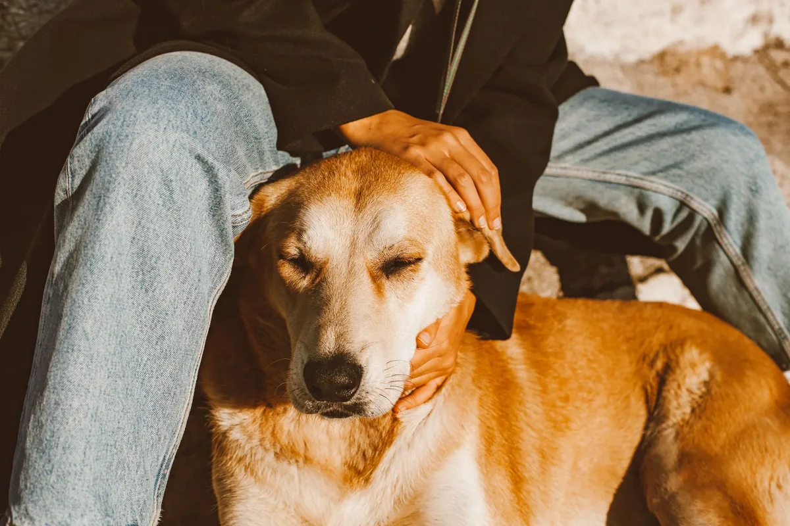
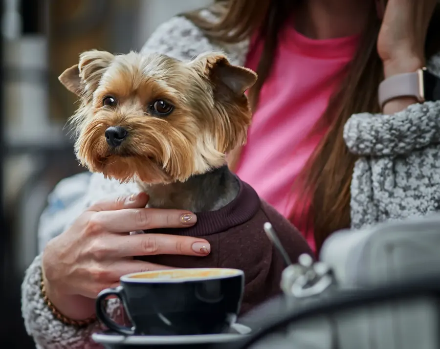
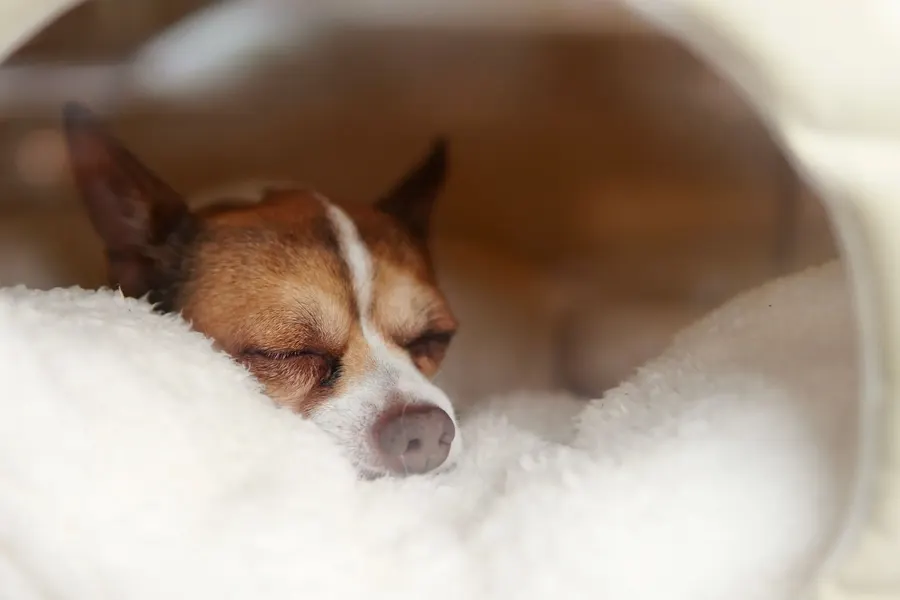
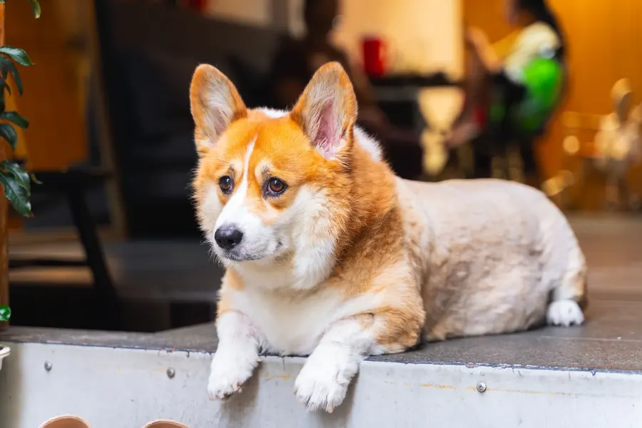
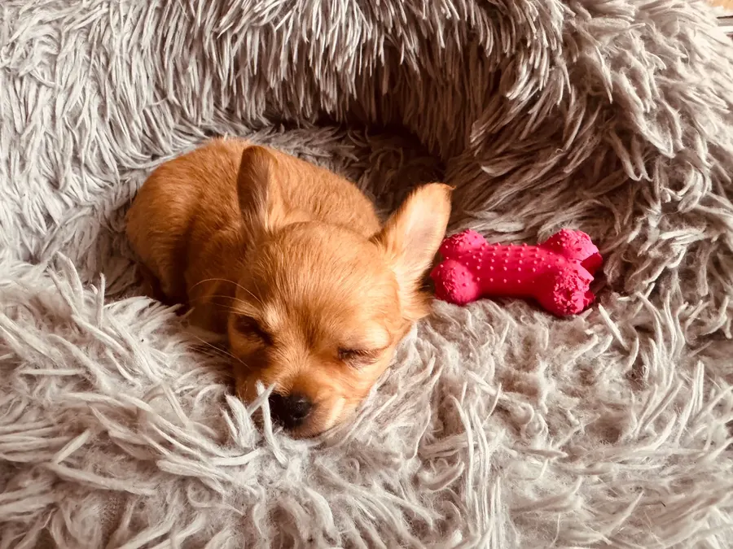
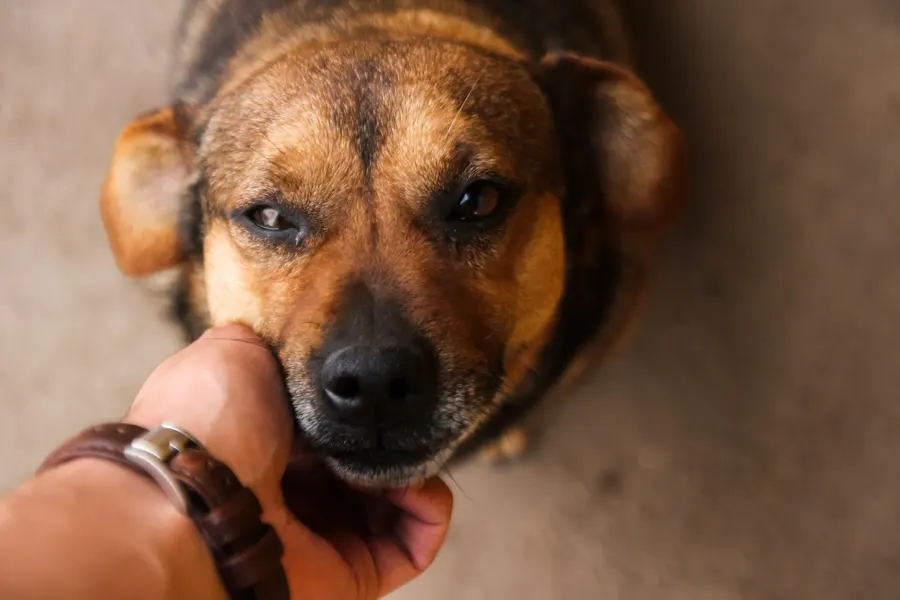

0.0℃
大久保通り、2月のコンクリート。
0.0℃
ひなたで寝ている、こむぎの背中。
taion（タイオン）は、席が9つだけの小さな犬カフェです。大通りの音が届かない路地の奥、すりガラスの引き戸を開けると、5匹の看板犬が顔を上げます。することは、とくにありません。コーヒーを一杯、ひざにあごを乗せられて、動けなくなるだけ。

0.0℃
大久保通り、2月のコンクリート。
0.0℃
ひなたで寝ている、こむぎの背中。
taion（タイオン）は、席が9つだけの小さな犬カフェです。大通りの音が届かない路地の奥、すりガラスの引き戸を開けると、5匹の看板犬が顔を上げます。することは、とくにありません。コーヒーを一杯、ひざにあごを乗せられて、動けなくなるだけ。

体重3kg前後のこどもたちは、ひざの上が定位置。カップを持つ手の内側で、寝落ちされることがあります。
耳のうしろ、あごの下、おしりの上。それぞれに「ここ」という場所があります。スタッフが小声で教えます。

午後2時台は、だいたいみんな寝ています。それでも来る常連さんは「寝息を聞きに来てる」と言います。
5匹全員、taionの正社員。出勤はきまぐれ、週3〜4日です。

店で一番のたべもの担当。レジ横で会計を監督しています。

ひざの上専門職。乗る相手は、もなかが選びます。
毛布にもぐる名人。見つけたら勝ちです。
目で訴えるタイプ。視線を感じたら、それは、きなこです。

開店前からいる最古参。初めての人には、ちゃいから挨拶に行きます。
すべて税込。ドリンク1杯つき。延長は10分きざみで気軽に。
¥900
仕事帰りにひと駅ぶんの回り道。いちばん選ばれています。
じっくり派
¥1,500
ひざの上で寝られても、あわてなくていい長さです。
¥250
「いま起きそうだから」の10分。だいたいみんな延長します。
平日17時以降は60分¥1,200。小学生は保護者同伴でどうぞ（未就学のお子さまはご入店いただけません）。
すりガラスの引き戸です。ゆっくり開けると、床の低いところから視線が集まります。
入ってすぐの小さな洗面台で、手洗いと消毒を。こどもたちの健康のためのお願いです。
しゃがんで、手の甲をそっと差し出す。近づいてくるまで、待つのがコツです。
正解の場所はスタッフが小声で教えます。時間はここから、ゆっくり流れます。